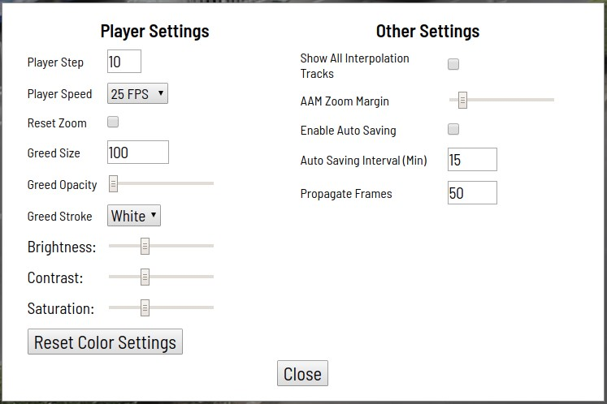

Computer Vision Annotation Tool: A Universal Approach to Data Annotation
By Sekachev, Boris, Nikita M., Andrey Z., published on March 1, 2019
At Intel, one of the projects we’re undertaking research on is developing computer vision algorithms based on deep neural networks (DNNs) and how to streamline the process. As with any other DNN, for model training data scientists need annotated data. Of course, there is plenty of data available on the Internet, but there are some roadblocks to utilizing. On one hand, data scientists are asked to apply AI to more and more new tasks without appropriate annotated data for those tasks. On the other hand, some data require a license agreement and therefore not suitable for use in commercial products’ development. That’s why Intel’s work isn’t only to develop and train algorithms, but to annotate data. This is a quite long and time-consuming process and shouldn’t fall to the algorithm developers to tackle. For example, members of our data annotation team spent about 3,100 hours to annotate more than 769,000 objects only for one of our algorithms.
There are two options to solve the data annotation dilemma:
First – delegate data annotation to other companies with the appropriate specialization. It should be noted that in this case the process of data validation and re-annotation is quite complicated and, of course, involves more paperwork.
Second (more convenient for our team) – create and support an internal data annotation team. We can quickly assign them new tasks and manage the work process. It is also easy to balance the price and quality of the work. In addition, it’s possible to implement our own automation algorithms and to improve the quality of annotation.
Generally, there are many ways to annotate data, but using special tools may help to speed up this process. Thus, in order to accelerate this process within the realm of Computer Vision, Intel developed a program called Computer Vision Annotation Tool (CVAT).
In this article, we will cover general information on CVAT, as well as more information on the architecture and future development directions. Let’s start by looking at an overview of CVAT before diving into the details.
General Information
Computer Vision Annotation Tool (CVAT) is an open source tool for annotating digital images and videos. The main function of the application is to provide users with convenient annotation instruments. For that purpose, we designed CVAT as a versatile service that has many powerful features.
CVAT is a browser-based application for both individuals and teams that supports different work scenarios. The main tasks of supervised machine learning can be divided into three groups:
- Object detection
- Image classification
- Image segmentation
CVAT allows you to annotate data for each of these cases. There are some advantages and disadvantages of the tool.
Advantages:
- Web-based. Users don’t need to install the app; they just have to open the tool’s link in a browser if they want to create a task or annotate data.
- Collaborative. Users can create a public task and split the work between other users.
- Easy to deploy. CVAT can be installed in the local network using Docker*.
- Automatic annotation. For example, users can employ interpolation between key frames.
- Professionally developed. The tool was created with support from professional annotation and algorithmic teams.
- Integration. CVAT is suitable for embedding into open and extendable platforms, for example, Onepanel*.
- Optional tools supported:
- Deep Learning Deployment Toolkit (Intel® Distribution of OpenVINO™ toolkit element)
- TensorFlow* Object Detection API (TF OD API)
- ELK (Elasticsearch* + Logstash* + Kibana*) analytic system
- NVIDIA* CUDA* Toolkit
- Support for different annotation scenarios.
- Open source code under the MIT license.
Disadvantages:
- Limited browser support. CVAT’s client works only in Google Chrome*. CVAT is not tested in other browsers, but it may work in Chromium*-based browsers, such as Opera* or Yandex* Browser.
- Unelaborated system of automatic testing. All checks have to be done manually, considerably slowing the development process. However, Intel is working to address this with the help of students of Lobachevsky State University of Nizhny Novgorod, who assist the team as a part of an IT Lab project.
- Lack of source code documentation. This can make it quite difficult to get involved in the tool’s development.
- Performance issues. Increasing requirements due to larger amounts of annotated data led to problems with Chrome Sandbox, which limits the use of RAM.
As mentioned above, CVAT supports a number of additional optional components:
- Deep Learning Deployment Toolkit, an element of the Intel® Distribution of OpenVINO toolkit used to speed up the TF OD API model launching without a GPU. The toolkit has some beneficial features for use in development.
- TensorFlow* Object Detection API, used to automatically annotate objects. Faster RCNN Inception ResNet V2 model trained on COCO (80 classes) is the default, but users can easily connect other models.
- Logstash*, Elasticsearch*, Kibana* lets users visualize and analyze annotation logs from clients. It may help monitor annotation process, or search for errors and their causes.
Data annotation
- Data annotation in CVAT starts by creating an annotation task with the following instructions:
- Name a task
- Specify labels and their attributes
- Choose files to download
- Datasets are loaded from the local file system or a mounted file system inside a container. A task can include one image archive, one video, a set or catalogue of images from shared storage.
- A few additional options:
- To specify the full URL of a detailed annotation specification and other additional information (Bug Tracker)
- To specify the URL of a Git-repository for data storage (Dataset Repository)
- To rotate all images 180 degrees (Flip Images)
- To support the layers for a segmentation task (Z-Order)
- To divide a huge dataset into a few smaller segments (Segment Size)
- To make overlapped segments (Overlap). This option makes video continuous from one segment into another
- To specify the quality of uploaded images (Image Quality)
- Then press Submit button and it will be added into the list of annotation tasks.
- Each link inside the Jobs
section corresponds to one segment. In this case, the dataset isn’t
divided into segments. Users can follow any link to start the annotation
process.
- Users
can use four shapes to annotate images: boxes, polygons (generally, for
segmentation tasks), polylines (which can be useful for annotating
roadmarks), and points (e.g., for annotating face landmarks or pose estimation).
Additionally, there are many features for use in typical annotation tasks: automation instruments (copy and propagate objects, interpolation, and automatic annotation using the TensorFlow OD API), visual settings, shortcuts, filters, and others. These can be changed in the Settings menu.
The Help menu also contains a number of shortcuts and other hints.
The annotation process is detailed in the examples below
Interpolation mode: CVAT may be used to interpolate bounding boxes and attributes between key frames. Then a set of images will be annotated automatically.
Attribute annotation mode: Attribute Annotation Mode was developed for image classification and accelerates the process of attribute annotation by focusing the annotator’s attention on just one exact attribute. Additionally, the process of annotation is carried out in this mode by using hot keys.
Segmentation mode: Annotation with polygons is used for semantic segmentation and instance segmentation. In this mode, visual settings make the annotation process easier.
Downloading annotations
Users have to choose Dump Annotation to download the latest annotations. It will be written in .xml file
that contains some metadata and all annotations. If a user connected a
Git repository at the stage of creating a task, this file can be
downloaded there.
The Internal Structure
Docker* containers in CVAT are used to simplify its installation and deployment. The system includes several containers. The CVAT container runs the supervisord process which generates a few Python* processes in a Django* environment. For example, the wsgi server process, which works on clients’ requests. Other processes – rq workers are used to process the “long-running” tasks from Redis: default and low. The long-running tasks are those which can’t be processed during one user’s request (creating a task, preparing an annotation file, annotation using TF OD API, and others). The number of workers can be changed in the supervisord configuration file.
The Django environment works with two database servers. The Redis* server stores information about the status of the tasks’ queue and the CVAT database contains all information about tasks, users, annotations, etc. PostgreSQL* (and SQLite* 3 during the development) is used as a Database Management System for CVAT. All data stores in cvat db volume. Volumes are used to avoid data loss when updating a container. In this way, the following volumes are mounted to CVAT container:
- cvat data volume
- cvat keys volume
- cvat logs volume
- cvat shared volume
The analytics system contains Elasticsearch, Logstash, and Kibana wrapped in Docker containers. When the work is saved, all data, including logs, are transferred to the server. The server transfers it in Logstash for filtration. Additionally, there’s an opportunity to automatically send notifications to email if any errors occur. Then, logs are transferred to Elasticsearch, where they are stored in the cvat events volume. After that, the user can view statistics and logs in Kibana. Meanwhile, Kibana will closely work with Elasticsearch.
CVAT’s source code contains a list of Django applications:
- authentication enables users’ authentication in the system (basic and LDAP)
- engine provides key applications: basic database models, loading and saving tasks, loading and uploading annotations, client’s interface, and server for creating, modifying, and deleting tasks
- dashboard is the client’s interface for creating, editing, searching, and deleting tasks
- documentation is used to display user documentation in the client interface
- tf_annotation enables automatic annotation using the TensorFlow Object Detection API
- log_viewer is used to send the client’s logs to Logstash when he or she saves work
- log_proxy enables the proxy connection from CVAT to Kibana
- git is used to integrate Git-repositories for data storage
The client part was implemented in JavaScript* and Django’s templates. CVAT uses mainly object-oriented programming paradigms and model-view-controller architecture, so every high-level object in the client part (player, shape, history) has its own source code file. A file can contain one (if an object isn’t displayed in UI) or many classes (for example, there are many different types of shapes as sets of classes: models, views, and controllers).
Development directions
Strong feedback and user demand is helping Intel determine the future direction of CVAT’s development.
For example:
- Make CVAT more convenient, easy to use, fast, and intuitive for users.
- Include more annotation features. For example, add cuboid annotation or the ability to filter images by a specific attribute.
- Improve the reliability and stability of the tool and simplify its development, including modifying the automatic testing system to make it very useful and effective.
- Expand the ways to automatically annotate data and implement more deep learning models that automate data annotation. In particular, there’s an opportunity to connect a huge amount of different Intel Distribution of OpenVINO toolkits models using the Deep Learning Deployment Toolkit.
- Develop a demo-server of CVAT so that users can try the tool without having to install. There is a third-party demo-server from Onepanel*, but uses significant CVAT modifications so Intel cannot be responsible for the stability of the service.
- Integrate the Amazon Mechanical Turk* and other platforms in CVAT for data annotation using crowdsourcing.
There are many feature requests in addition to what is detailed above. Unfortunately, there are always more requests than opportunities to implement them. That’s why Intel encourages the community to take an active part in the open source development.
There is also a guideline where users can learn how to set up a development environment, the process of creating your PR, etc. As has been mentioned above, there’s no documentation for developers yet but users can always ask for help in Gitter chat.
Now get involved and create, using the Computer Vision Annotation Tool.